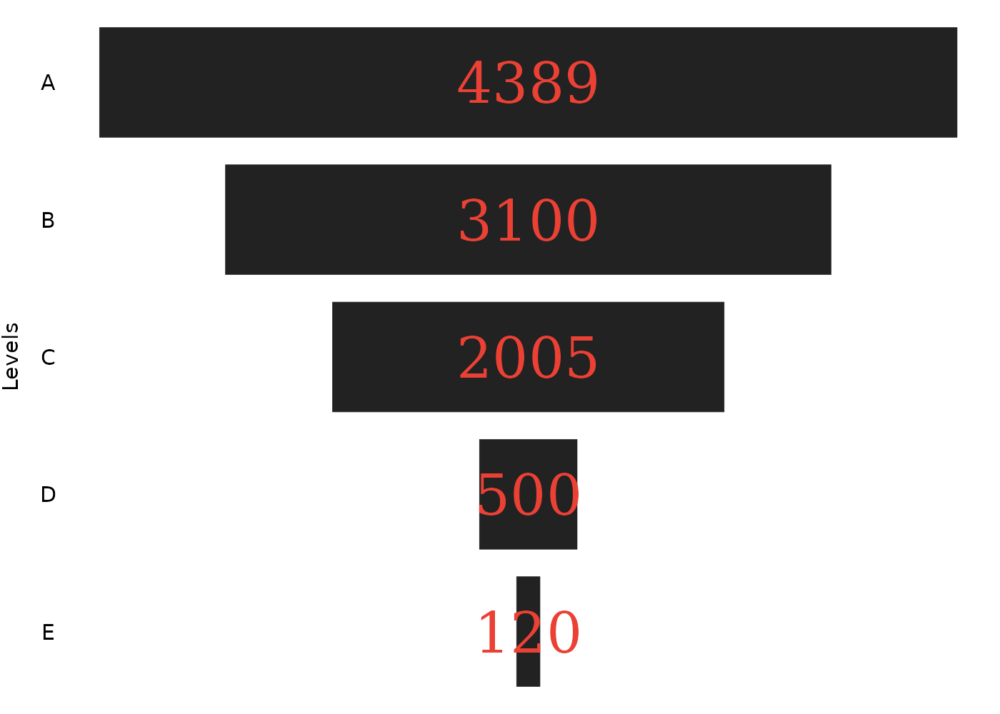

Building a funnel chart, and customizing its output
Pedro Duarte Faria
funnel.RmdIntroduction
The ggfunnel package uses ggplot2 to build
a Power BI like funnel chart. The main functionality of the package is
available trough the ggfunnel::funnel() function. You just
give the data.frame with your data to the function, and
specify which are the columns for the levels and the values of the
funnel chart. The ggfunnel::funnel() function will do the
rest for you:
library(ggfunnel)
# Using the `ggfunnel::aggregates` data.frame as example:
print(ggfunnel::aggregates)
#> Step N_users
#> 1 A 4389
#> 2 B 3100
#> 3 C 2005
#> 4 D 500
#> 5 E 120
# Ploting a funne chart that shows the distribution of users
# across the different "steps".
plot <- ggfunnel::aggregates |>
ggfunnel::funnel(
values = N_users, levels = Step
)
print(plot)
How it works ?
In essence, the ggfunnel::funnel() function uses the
ggplot2::geom_tile() geom from ggplot2 to draw
the rectangles that composes the funnel chart. Optionally (depending on
the value of the labels argument), the function will use
the ggplot2::geom_text() geom as well to draw the labels of
the plot.
All rectangles drawn by ggplot2::geom_tile(), are
centered at a fixed point of the x axis (usually at zero) and uses the
same height ratio (which currently is 0.8 as default). But their widths
vary depending on the percentage their represent to the max value in the
funnel.
In other words, if we take the 3100 value from the plot of the previous example, this 3100 is approximately 70% of the maximum value found in the set (which is 4389). As a result, the width of the rectangle that represents this 3100 value is approximately 0.7.
The maximum value in the set is always the top rectangle in the funnel, and the minimum value on the set is always at the bottom rectangle of the funnel. Since the top rectangle in the funnel represent the maximum value in the set, his width is always 1, because its value represents 100% of the maximum value in the set.
Therefore, the widths of each rectangle are the percentage of the value they represent to the maximum value of the set.
Using the stat argument to aggregate data
By default, ggfunnel::funnel() will always try to
aggregate the data you deliver. But you can use the stat
argument to change this behaviour.
Lets take the df object below as an example:
set.seed(15)
df <- data.frame(
letter = c("A", "A", "A", "B", "C", "C", "D"),
value = sample(320:5400, size = 7)
)
df
#> letter value
#> 1 A 4910
#> 2 A 2017
#> 3 A 4592
#> 4 B 580
#> 5 C 4398
#> 6 C 1706
#> 7 D 915The letter column is clearly a kind of categorical data,
and the value column contains numerical data that we might
want to visualize in a funnel chart. When you give this df
object, as is, to ggfunnel::funnel(), two things happens to
the df object before it is shipped to
ggplot2::ggplot(), to start the ggplot2
chart:
ggfunnel::funnel(
df, levels = letter, values = value
)First, ggfunnel::funnel() will group the data inside the
df object by using dplyr::group_by(). The data
is always grouped by using the column that you gave at the
levels argument. In other words, the data is always grouped
by using the categorical data you want to use in the funnel chart.
Second, after it grouped the given data.frame,
ggfunnel::funnel() will aggregate your data using
dplyr::summarise(). The operation applied inside the
dplyr::summarise() function depends on the value you
configured at the stat argument. The stat
argument accepts three string values, which are:
-
"sum": the default, aggregates the data by summing thevaluescolumn; -
"count": aggregates the data by counting the number of rows for each value atlevelscolumn; -
"identity": do not aggregate the data, and just interpret the data as is;
By default, ggfunnel::funnel() uses the
"sum" value at the stat argument, which means
that it applies the sum() function over the column you gave
at the values argument. In other words, it applies the
sum() function over the numerical data you want to present
in the funnel chart.
Having this in mind, the resulting aggregated data from the
df object that is used in the plot, is:
df |>
dplyr::group_by(letter) |>
dplyr::summarise(value = sum(value))
#> # A tibble: 4 × 2
#> letter value
#> <chr> <int>
#> 1 A 11519
#> 2 B 580
#> 3 C 6104
#> 4 D 915This data.frame above is the data that is used to build
the funnel chart, not the original df object.
The ggfunnel::funnel() function is designed to do all of
this work, because a funnel chart is a chart to visualize aggregated
data. In other words, funnel charts are not commonly used to visualize
raw data, or, lots of observations at the same time. So, if you deliver
raw data to ggfunnel::funnel() it will try to aggregate
your data by default.
However, although this is a useful feature, you might want to
suppress it. In other words, you might already have aggregated data
inside your data.frame, and, you just want to visualize
them in a funnel chart, without aggregating it again.
To use your data, as is, in the funnel chart, you just need to set
the stat argument to "identity"
(stat = "identity"). This way,
ggfunnel::funnel() understands that you already have an
aggregated dataset, and, therefore, that it needs no further
transformations.
How to customize the output ?
ggfunnel::funnel() uses a default theme and
specifications in the resulting plot. But you might want to customize
some aspects of the output. In this case, you can use the
tile_specs, text_specs and theme
arguments of ggfunnel::funnel() to apply these
customizations.
Customizing the rectangles
If you want to change the aspects of the rectangles that form the
funnel chart, than, this means you want to change the specifications of
the ggplot2::geom_tile() used to build the chart.
For example, a very commom you might want to change in these
rectangles is the filling color or them. To do this, you must use the
tile_specs argument of ggfunnel::funnel(). You
give a list with the new color you want to apply on the
fill element, like in the example below:
plot <- ggfunnel::aggregates |>
ggfunnel::funnel(
values = N_users, levels = Step,
tile_specs = list(fill = "#eb4034")
)
print(plot)
This new color will be passed to the fill argument of
ggplot2::geom_tile(). This means that you change the
default value associated with any argument of
ggplot2::geom_tile() with this list given to
tile_specs.
As another example, I could change the heights and the contour color
of all rectangles by setting the height and
colour elements of the list. Like this:
Customizing the labels
You can also customize the labels used in the plot. You just to
follow the exact same process you did to customize the
ggplot2::geom_tile() used in the plot. That is, you give to
the text_specs argument a list with the new values you want
to use at any argument of the ggplot2::geom_text().
For example, I could change the size, color and the font used in the
labels by setting the size, colour and
family elements of the list, like this:
plot <- ggfunnel::aggregates |>
ggfunnel::funnel(
values = N_users, levels = Step,
text_specs = list(
colour = "#eb4034",
family = "serif",
size = 10
)
)
print(plot)
A common tweak you might want to make to the plot, is to nudge some
labels to the right, or to the left, by a specific amount. To do this,
you give a vector to the nudge_x element of the list. Each
element of this vector is a offset value to be added to the position of
each label. In the example below, I am nudging only the last label to
the right (use a negative offset value to nudge the label to the
left).
plot <- ggfunnel::aggregates |>
ggfunnel::funnel(
values = N_users, levels = Step,
text_specs = list(
colour = "#eb4034",
nudge_x = c(rep(0, times = 4), 0.1)
)
)
print(plot)Another thing you might want to do, is to apply a specific color at
some labels, and, apply another color at the other set of labels. For
this, you take a similar approach to the above example, and, give a
vector to the colour element of the list you provided to
text_specs. In the example below, I am coloring all labels
of white, except the last one, which is now black.
Adding more elements to the plot
Since ggfunnel::funnel() returns as output, the raw
ggplot object that describes the funnel chart, you can also
add much more content to the plot by adding new geoms, themes, titles
and scales, as you would normally do with any other kind of
ggplot2 plot.
In the example below, we are adding title and subtitle to the plot, adjusting the theme, and adding some notes and arrows to emphasize some parts of the plot.
plot <- ggfunnel::aggregates |>
ggfunnel::funnel(
values = N_users, levels = Step,
text_specs = list(
nudge_x = c(rep(0, times = 4), 0.05),
colour = c(rep("white", times = 4), "black")
)
)
note <- "We lost **75% of the users**<br>from step \"C\" to step \"D\""
plot +
ggplot2::labs(
title = "Funnel of users in each step of the sales path",
subtitle = "The biggest loss of users is at the \"D\" step",
y = NULL
) +
ggplot2::theme(
plot.title = ggplot2::element_text(face = "bold", size = 16),
plot.title.position = "plot"
) +
ggtext::geom_richtext(
ggplot2::aes(x = 0.35, y = "D",
label = note),
label.color = NA
) +
ggplot2::geom_segment(
ggplot2::aes(x = 0.17, xend = 0.07, y = "D", yend = "D"),
arrow = ggplot2::arrow(
length = ggplot2::unit(0.25, "cm")
)
)